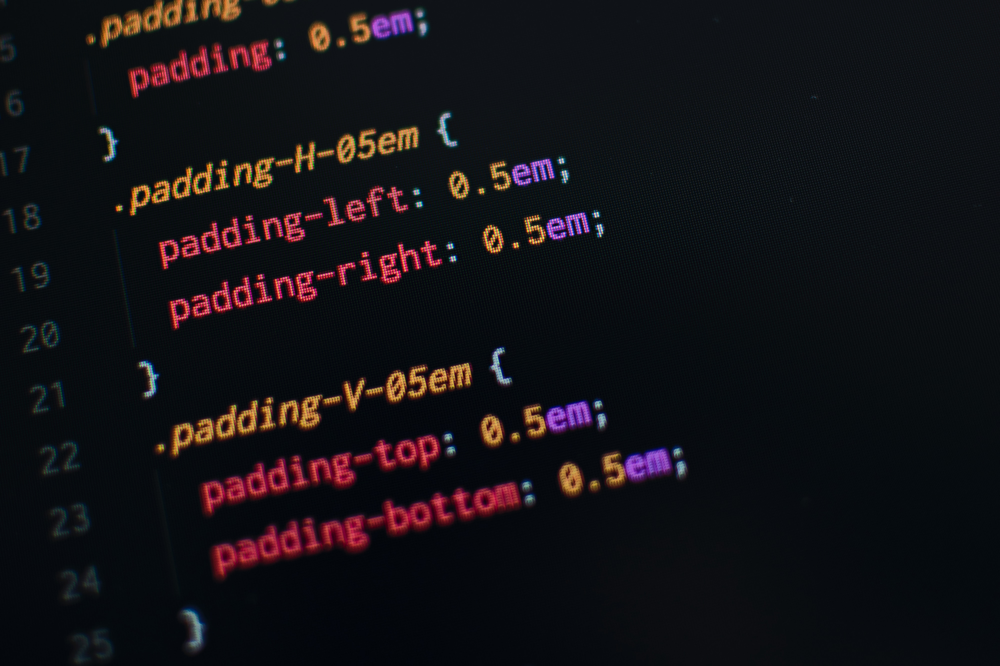

CSS stands for Cascading Style Sheets CSS describes how HTML elements are to be displayed on screen, paper, or in other media CSS saves a lot of work. It can control the layout of multiple web pages all at once External stylesheets are stored in CSS files
This is a demonstration of how different stylesheets can change the layout of your HTML page. You can change the layout of this page by selecting different stylesheets in the menu, or by selecting one of the following links: Stylesheet1, Stylesheet2, Stylesheet3, Stylesheet4. No Styles This page uses DIV elements to group different sections of the HTML page. Click here to see how the page looks like with no stylesheet: No Stylesheet.